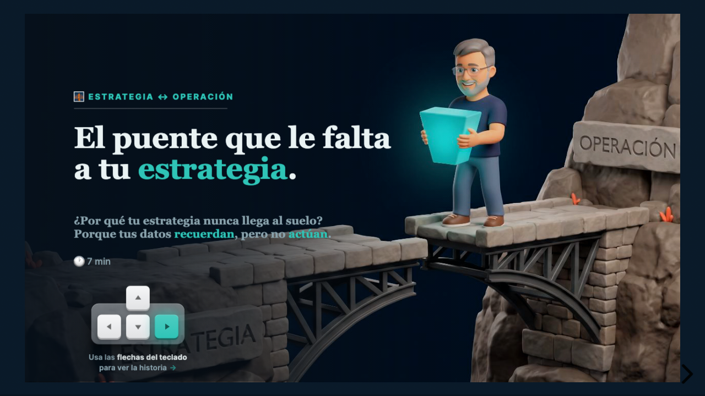

Decks de una sola pantalla (1280×720) donde un narrador on-model recorre una idea, reacciona, y en cada momento un titular nombra un principio mientras una revelación aterriza el punto. Ábrelos y navega con ← →.

La estrategia muere en registros que no actúan. La ontología convierte tu system of record en system of action: la palanca baja como acción, la señal sube como registro, el bucle cierra.